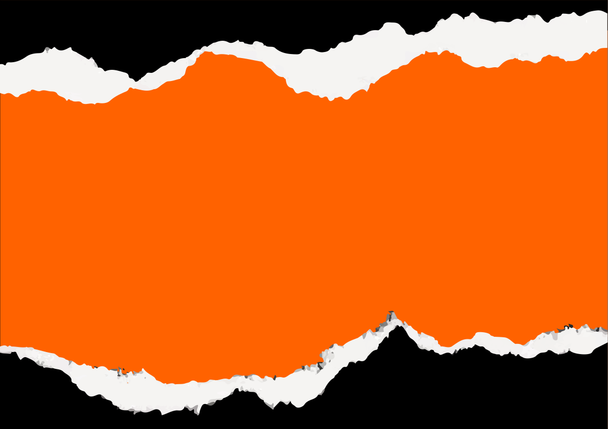
 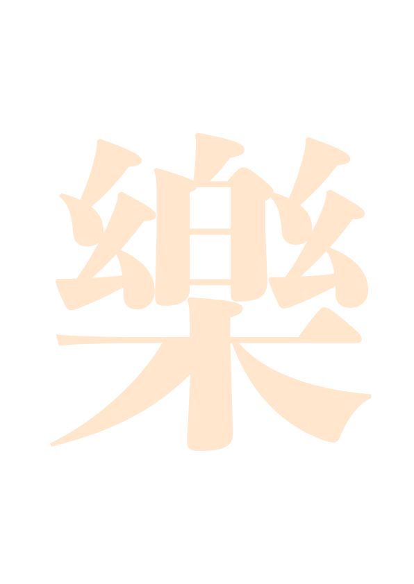
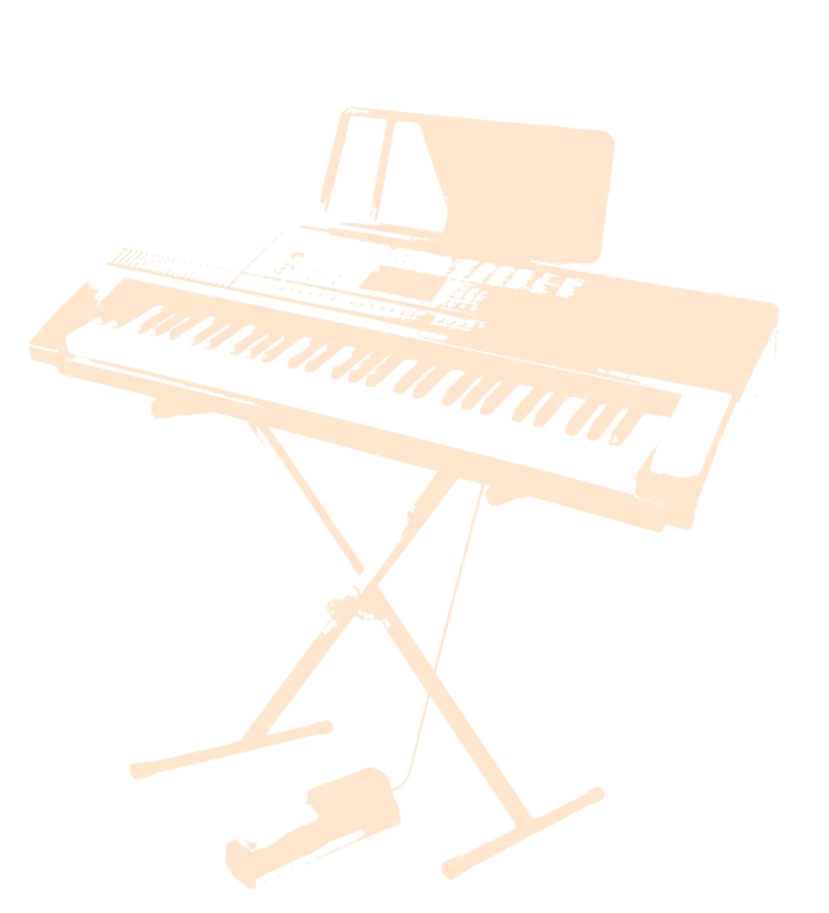
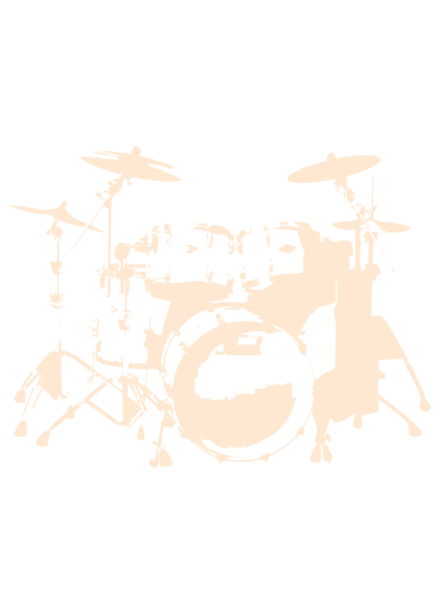
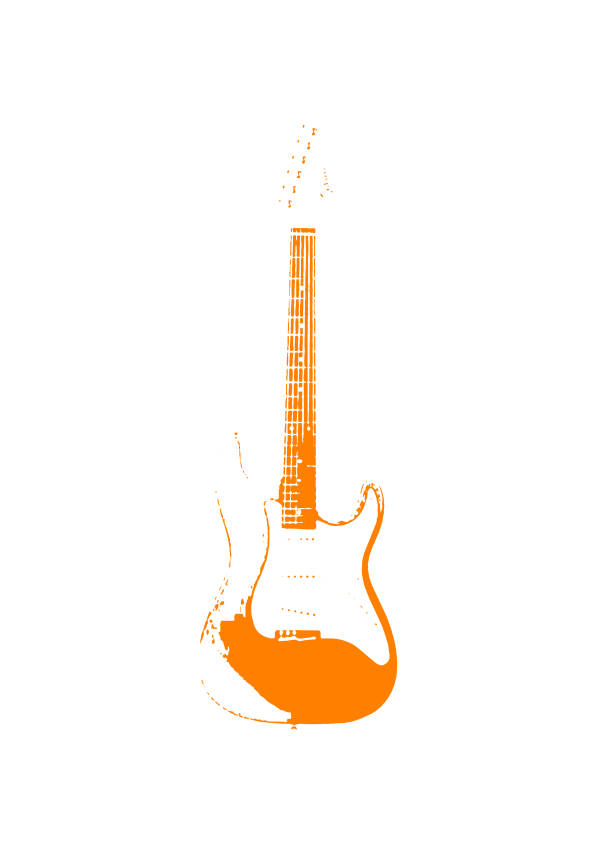
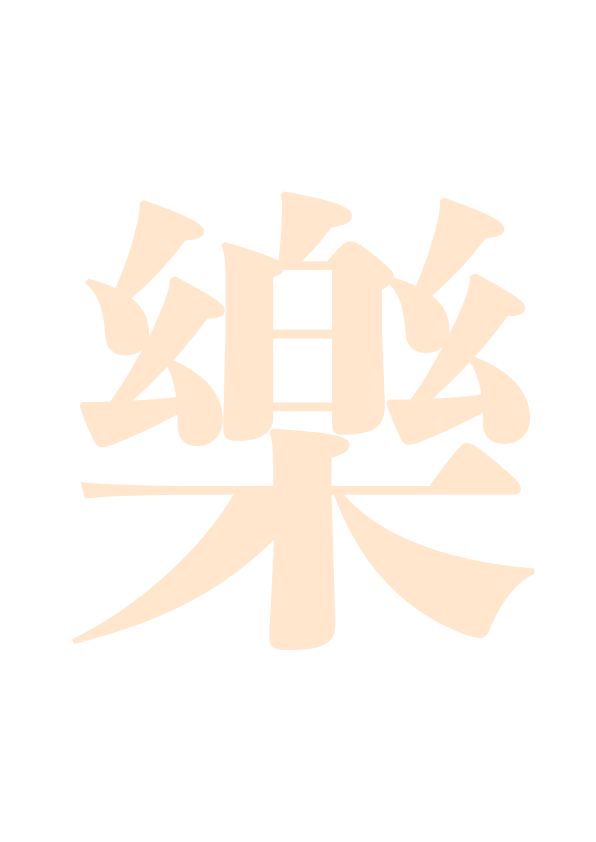
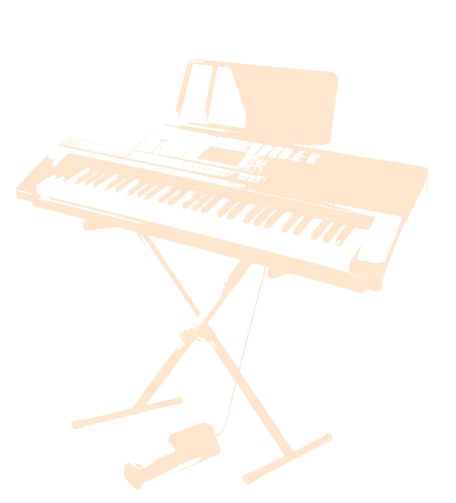
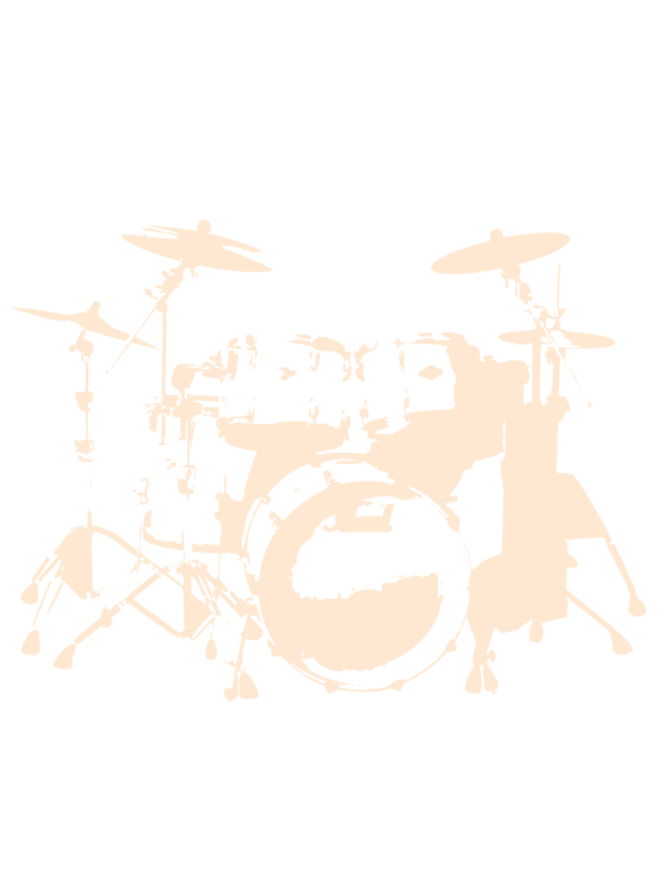
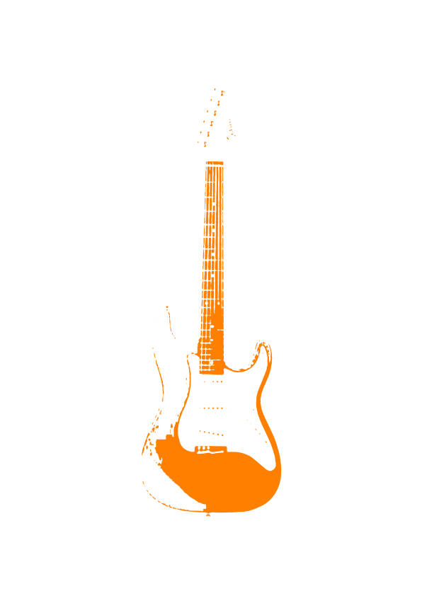
 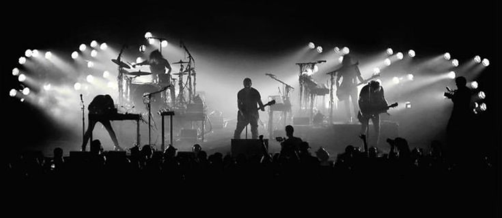
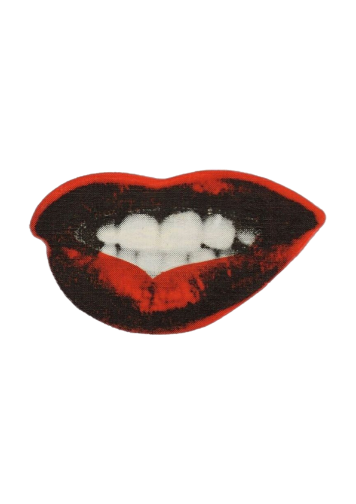
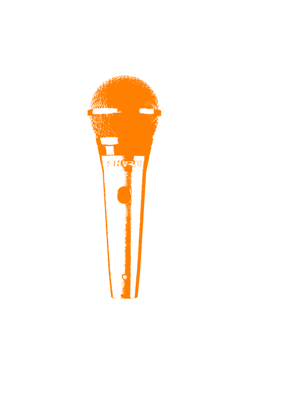
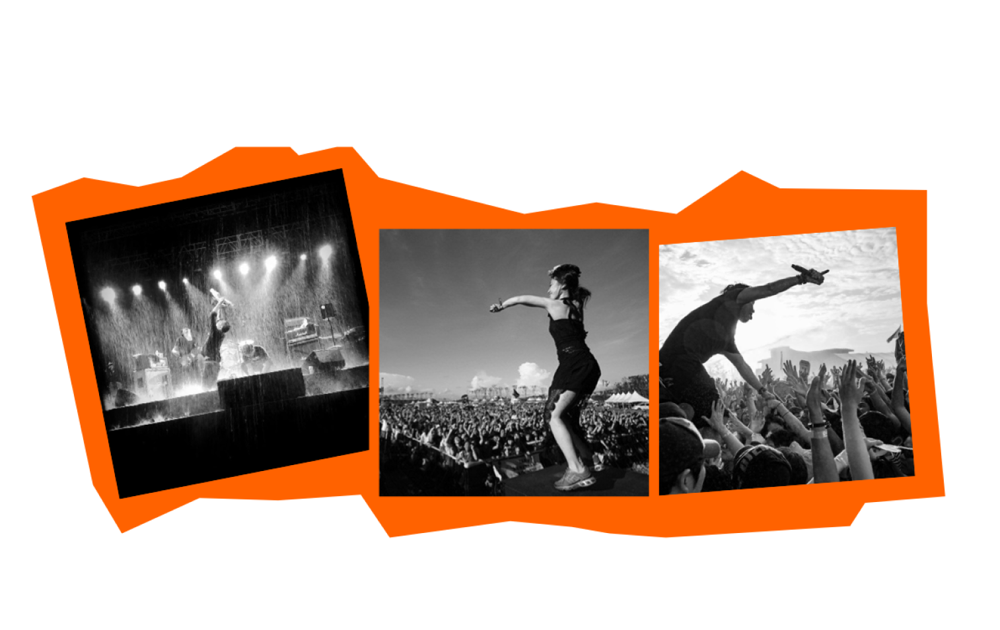
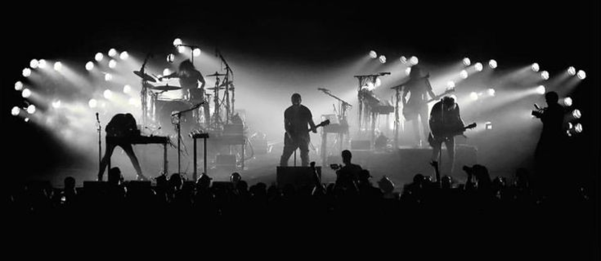
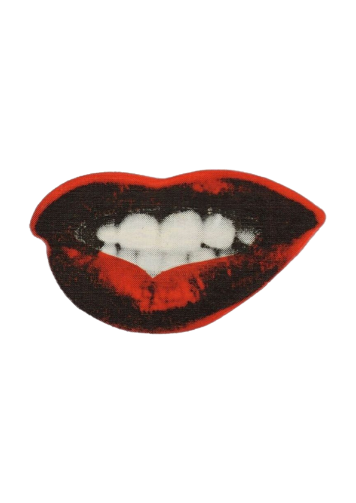
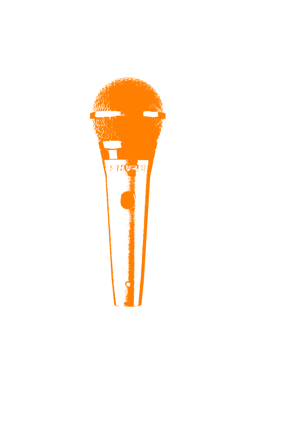
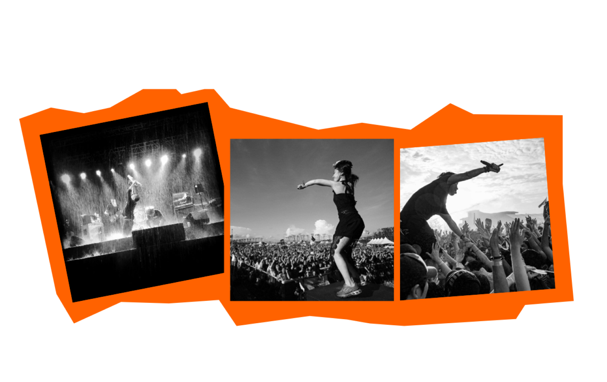
즐길 락도 락이다
락 페스티벌을 즐기는 법
국내 락 페스티벌, 99년부터 존재했다?
국내 최초의 록 페스티벌은
‘트라이포트 록 페스티벌(Triport Rock Festival)’
입니다.
“왜 페스티벌을 개최하는가? 이 땅에 록을 좋아하는 사람들이 있기 때문에…!”
라는 취지로,
1999년 7월 31일 인천 송도 시민공원
에서 개최될 예정이었어요.
김경호나 델리스파이스 같은 한국 아티스트는 물론이고, 딥 퍼플과 드림
씨어터 등의 세계적인 거장까지 초청해 대한민국 록의 새로운 문을 열고자
하였죠.
그러나 공연 당일 엄청난 폭우로 인해 첫날은 몇몇 무대가 취소되고 둘째날
공연은 완전 취소가 되고 말았습니다.
잦은 라인업 교체와 공연 중단 등 여러 문제로 이 웅대한 꿈이 날개를 펼치지
못한 것
이죠. 하지만 이러한 시도는 훗날 대한민국 안에서 많은 페스티벌 문화가
생겨나는 데에 매우 큰 영향을 미쳤습니다.
INFP도 락 페스티벌에선 떼창한다
설문 관련 이야기/... 통계 설명.... 설문 관련 이야기/... 통계 설명.... 설문
관련 이야기/... 통계 설명.... 설문 관련 이야기/... 통계 설명.... 설문 관련
이야기/... 통계 설명.... 설문 관련 이야기/... 통계 설명.... 설문 관련
이야기/... 통계 설명.... 설문 관련 이야기/... 통계 설명.... 설문 관련
이야기/... 통계 설명.... 설문 관련 이야기/... 통계 설명.... 설문 관련
이야기/... 통계 설명.... 설문 관련 이야기/... 통계 설명.... 설문 관련
이야기/... 통계 설명.... 설문 관련 이야기/... 통계 설명.... 설문 관련
이야기/... 통계 설명.... 설문 관련 이야기/... 통계 설명.... 설문 관련
이야기/... 통계 설명.... 설문 관련 이야기/... 통계 설명....
설문 관련 이야기/... 통계 설명.... 설문 관련 이야기/... 통계 설명.... 설문
관련 이야기/... 통계 설명.... 설문 관련 이야기/... 통계 설명.... 설문 관련
이야기/... 통계 설명.... 설문 관련 이야기/... 통계 설명.... 설문 관련
이야기/... 통계 설명.... 설문 관련 이야기/... 통계 설명.... 설문 관련
이야기/... 통계 설명.... 설문 관련 이야기/... 통계 설명.... 설문 관련
이야기/... 통계 설명.... 설문 관련 이야기/... 통계 설명.... 설문 관련
이야기/... 통계 설명.... 설문 관련 이야기/... 통계 설명.... 설문 관련
이야기/... 통계 설명.... 설문 관련 이야기/... 통계 설명.... 설문 관련
이야기/... 통계 설명.... 설문 관련 이야기/... 통계 설명....
설문 관련 이야기/... 통계 설명.... 설문 관련 이야기/... 통계 설명.... 설문
관련 이야기/... 통계 설명.... 설문 관련 이야기/... 통계 설명.... 설문 관련
이야기/... 통계 설명.... 설문 관련 이야기/... 통계 설명.... 설문 관련
이야기/... 통계 설명.... 설문 관련 이야기/... 통계 설명.... 설문 관련
이야기/... 통계 설명.... 설문 관련 이야기/... 통계 설명.... 설문 관련
이야기/... 통계 설명.... 설문 관련 이야기/... 통계 설명.... 설문 관련
이야기/... 통계 설명.... 설문 관련 이야기/... 통계 설명.... 설문 관련
이야기/... 통계 설명.... 설문 관련 이야기/... 통계 설명.... 설문 관련
이야기/... 통계 설명.... 설문 관련 이야기/... 통계 설명....
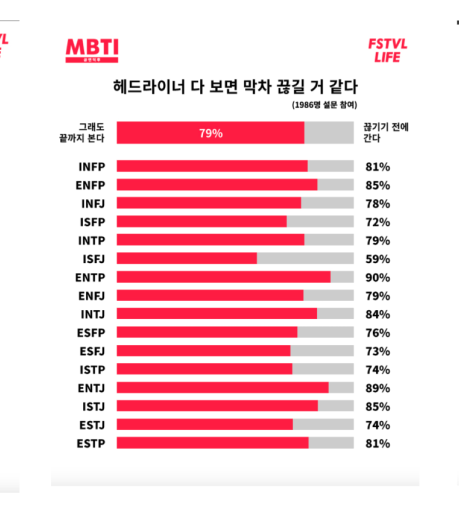
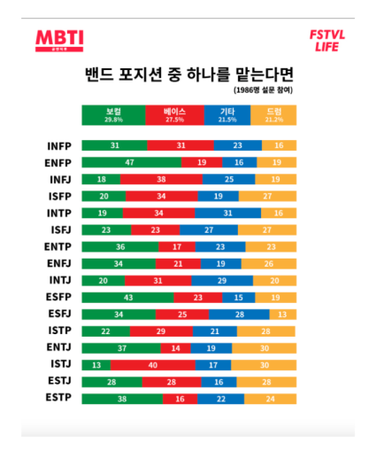

엄청난 파급력을 주는 락 페스티벌
국내의 인지도 높은 락페스티벌 중 하나인
‘부산 락페스티벌’ 의 빅데이터 자료
예요. 코로나19 사회적 거리두기가 해제된 년도인
2022년의 10월 1일부터 이틀간의 시간
을 바탕으로 데이터를 추출했어요.
입장료가 있는 축제임에도 불구하고,
외부지역 관람객이 전국에서 고르게 분포
되었기 때문에
높은 인지도
를 보여줍니다. 사상구의 삼락생태공원에서 주최된 이 락 페스티벌로 인해
사상구의 매출이 21.2%나 증가
했어요.
당일 체류한 평균 인구수도 3만 명
을 넘어가며, 관외 인구의 비율도 56%로 매우 높았습니다.
‘부산 락페스티벌’을 비롯한 다양한 락페스티벌이 2022년도를 기점으로 다시
인지도를 가지기 시작했어요. 매출과 방문인구도 락 페스티벌이 개최된
날짜에 맞춰 급증한다는 결과가 있었습니다. 문화 뿐만 아니라, 해당 지역과
인근 지역의 시장까지 발달시키는 페스티벌인 것이죠.
무더위가 절정에 달할 때 ‘락 페스티벌’ 에 대한 관심도 급격히 늘어납니다.
매월 7월부터 8월까지 ‘락 페스티벌’ 검색량이 급증
하는데요.
앞선 통계와 마찬가지로 2022년 이후에 그 검색량이 두 배에서 세 배까지
늘어났습니다. 락 페스티벌이 개최되는 시기가 보통 8월에 몰려 있기 때문에
이러한 통계 결과가 나오는 것입니다. 페스티벌 예매 당일과 개최 당일에는
특히 검색량이 더욱 증가합니다.
락 페스티벌에 관심을 가지고 참여하는 인구 대부분이 20대에서 30대이기
때문에,
SNS에 락 페스티벌 관람 후기 등 다양한 미디어 컨텐츠도 함께 활성화
되고 있어요. 락 페스티벌과 관련된 온라인 커뮤니티 또한 나날이 증가하고
있습니다.
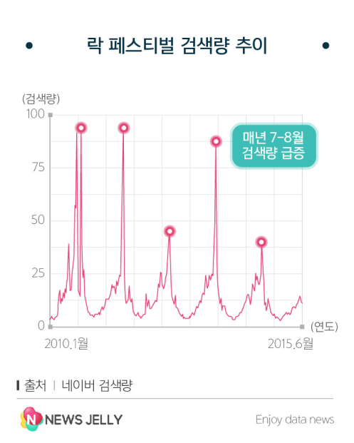
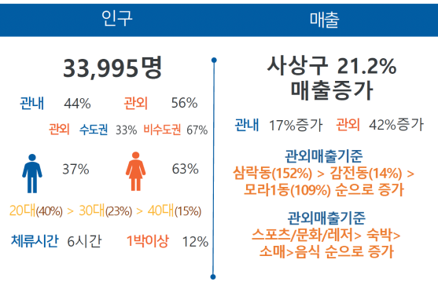
짧은 마무리글... 짧은 마무리글... 짧은 마무리글... 짧은 마무리글... 짧은
마무리글... 짧은 마무리글... 짧은 마무리글... 짧은 마무리글... 짧은
마무리글... 짧은 마무리글... 짧은 마무리글... 짧은 마무리글... 짧은
마무리글... 짧은 마무리글... 짧은 마무리글... 짧은 마무리글...
즐길 락도 락이다
현재까지 기획되고 있는 국내 락 페스티벌은?
불발로 그친 99년 트라이포트 록 페스티벌 이후, 국내에서도 락 페스티벌이
개최되기 시작했습니다.
같은 해 9월 동두천시 종합 운동장에서 개최된
‘동두천 락 페스티벌’
을 시작으로, 2000년 7월 개최된
‘부산 국제 록 페스티벌’
, 트라이포트 록 페스티벌의 정신을 발전시킨 2006년의
‘펜타포트 록 페스티벌’
,
2007년 기획된
‘그랜드 민트 페스티벌’
,
‘쌈지 사운드 페스티벌’
,
‘안산 M 밸리 록 페스티벌’
등 다양한 락 페스티벌이 기획되었어요. 매년 새로운 시도를 하는 다양한 락
페스티벌은 현재까지 이어져 대중들의 마음을 사로잡고 있습니다.
락 페스티벌에 돗자리가 필수품이라고?
보통 페스티벌이 6시간가량 이어지기 때문에, 휴대폰 배터리가 닳지 않도록
보조배터리
도 꼭 챙겨 가야 해요.
락 페스티벌에 가장 필요한 물품은 뭘까요? 2012년부터 2024년까지의 트위터,
블로그 연관 키워드를 분석해 알아봤습니다.
가장 지속적으로 언급되는 물품은 바로
돗자리와 우산, 카메라, 보조배터리
였습니다.
앉거나 누워서 음악을 감상하려면
돗자리
는 필수품! 페스티벌마다 돗자리 규격이 정해져있는 경우도
있으니 참고하시기 바랍니다.
또 여름 장마철, 갑작스럽게 내리는 비에 방해받지 않고 공연을 즐길 수
있도록
우산
이 필요합니다.
더운 햇빛을 피하기 위해서라면 우비로는 부족하겠죠?
좋아하는 아티스트의 곡을 라이브로 들을 수 있는 순간을 평생 추억으로
간직하기 위한
카메라
도 필요합니다.
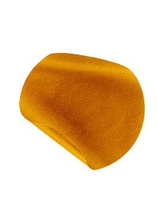
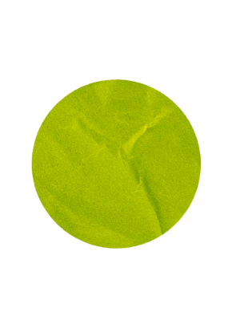
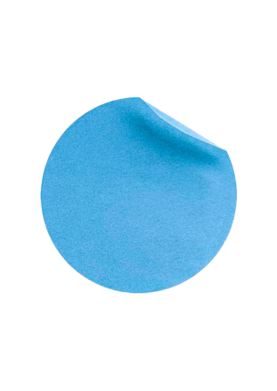
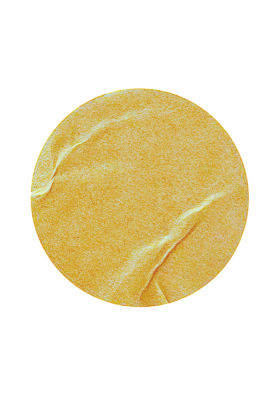
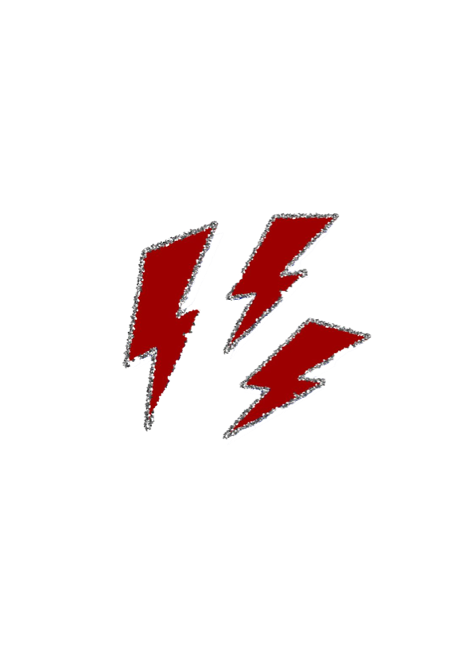